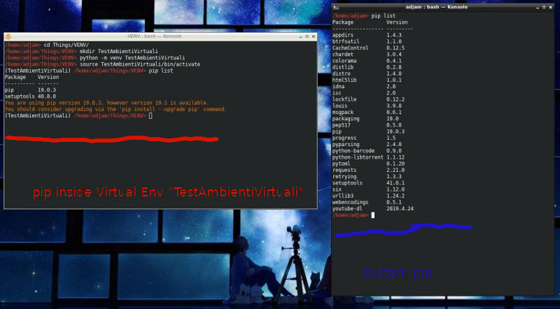

Gli ambienti virtuali
Un ambiente virtuale è uno spazio indipendente dal resto del sistema in cui è possibile lavorare e fare test con python e pip con la certezza di non andare a sporcare o rovinare il proprio ambiente fisico, ovvero l'installazione originale di Python nel nostro sistema!
La loro grande popolarità è dovuta sostanzialmente ai seguenti fatti:
- è possibile creare molti ambienti virtuali contemporaneamente e quindi lavorare su progetti anche potenzialmente in conflitto tra loro senza farli "scontrare" minimamente;
- è possibile installare moduli nuovi con pip senza i privileggi di amministratore, cosa che rende possibile sviluppare su qualunque dispositivo connesso alla rete;
- è possibile installare su ambienti virtuali diverse versioni diverse dello stesso modulo o dello stesso software (basato su Python) per motivi di test e/o di sviluppo;
- è possibile entrare e uscire velocemente da un ambiente virtuale "entrando" nell'ambiente di sviluppo e "ritornando" al sistema immacolato dell'utente
Fisicamente, un ambiente virtuale non è altro che una cartella selezionata da noi in cui il modulo venv (Virtual ENVironment, ricordate?) creerà una copia dei programmi "python" e "pip" e una copia di tutte le librerie loro necessarie, così come della cartella "site-packages" dove verranno installati i moduli eventualmente aggiunti con pip.
L'attivazione dell'ambiente virtuale fa in modo che l'utente lì dentro possa usare solo "le copie" di python e pip, così come solo i moduli locali installati nella cartella "virtuale", così come i moduli della libreria standard python: infatti i moduli della libreria standard sono installati direttamente nelle cartelle "base" di python e sono sempre disponibili per la versione a cui si riferiscono.
Facciamo una prova per capire il (semplice) funzionamento di un ambiente virtuale
Gestire un ambiente virtuale
Un ambiente virtuale si crea con il modulo venv che fa parte della libreria standard di Python 3, dalla versione 3.4 in avanti. La scelta di includere questo modulo nella libreria standard sottolinea due fatti:
-
Creare ambienti virtuali è un'operazione "standard" per chi lavora in Python, incoraggiata da tutta la comunità tanto da includere il modulo che li gestisce nella libreria standard
-
il modulo venv è la modalità prescelta dai progettisti python per la creazione di ambienti virtuali. In rete si trovano varie altre modalità per crearli e utilizzarli, ma il modulo venv è la modalità da considerare maggiormente.
Creiamo nel nostro sistema una cartella da destinare al nostro primo ambiente virtuale; chiamiamola per esempio "TestAmbientiVirtuali" e procediamo alla creazione dello stesso
Per creare l'ambiente virtuale
$ python -m venv Percorso/Fino/Alla/Cartella/TestAmbientiVirtuali
Dopo un paio di secondi, l'ambiente virtuale è pronto!
Con l'operazione precedente abbiamo creato un ambiente virtuale che si chiama "TestAmbientiVirtuali" (come la cartella). All'interno della stessa il modulo venv avrà creato tutte le copie dell'eseguibile python, di pip e della cartella (vuota) "site-packages" dove verranno installati i moduli scaricati con il pip virtuale
Per attivare e disattivare l'ambiente virtuale, all'interno della cartella "TestAmbientiVirtuali" venv ha creato gli script "activate" e "deactivate". Su Windows si trovano dentro la cartella "Scripts", su Mac e Linux si trovano dentro la cartella "bin".
Per attivare l'ambiente virtuale
Su Windows
> cd Percorso/Fino/Alla/Cartella/TestAmbientiVirtuali
> Scripts/activate.bat
Su Mac o Linux
$ cd Percorso/Fino/Alla/Cartella/TestAmbientiVirtuali
$ source bin/activate
Ovviamente, in maniera analoga alle istruzioni per l'attivazione, lo script "deactivate" disattiva l'ambiente virtuale creato.
Se prima e dopo controllate i moduli installati con pip (oppure utilizzate un altro prompt dei comandi) potete apprezzare la differenza tra l'ambiente fisico e quello virtuale.
Ecco una schermata del mio computer.

Tutto qui!
Basta provare un paio di volte.
Lavorare con un ambiente virtuale
Ok, siamo in grado di creare e attivare un ambiente virtuale. E adesso? Cosa ci facciamo? Gli ambienti virtuali sono un grandissimo aiuto quando si vuole sviluppare un'applicazione che si basa su moduli specifici non solitamente installati sul sistema. Proviamo con un esempio.
Lo sviluppatore 1 crea un ambiente virtuale
Lo sviluppatore 1 vuole implementare nell'ambiente virtuale "TestAmbientiVirtuali" appena creato un progetto per calcolare la distanza fra le stelle conosciute e capire quali universi potrebbero essere visitati dall'uomo, etc...
Il progetto sarà basato su skyfield e astropy, che sono due moduli python utilizzati per i calcoli astronomici. All'interno del suo ambiente virtuale installa i moduli a lui necessari:
(TestAmbientiVirtuali) $ pip install skyfield astropy
A questo punto, si crea una cartella che chiamerà "StarsTrips" e utilizzerà i due moduli citati per scrivere il codice necessario per il suo obiettivo.
(TestAmbientiVirtuali) $ cd StarsTrips
... ore di coding, parolacce, merende varie ...
Terminato il suo lavoro, nella cartella StarsTrips ci sarà la sua fantastica applicazione: per permettere a chiunque di eseguire direttamente il suo codice gli manca solo di indicare quali moduli ha utilizzato per lo sviluppo così che chiunque possa installarli e aiutarlo nella sua impresa. Per fare ciò basta fare, dentro la cartella StarsTrips:
Elenca i moduli installati nell'ambiente virtuale scrivendoli nel file "requirements.txt"
(TestAmbientiVirtuali) $ pip freeze > requirements.txt
Questo comando crea un file chiamato "requirements.txt" che elenca tutti i moduli installati nel nostro ambiente virtuale. Fatto questo, lo sviluppatore 1 può condividere con chiunque il proprio lavoro, presente nella cartella StarsTrips e cancellare eventualmente l'ambiente virtuale, semplicemente eliminando la cartella "TestAmbienteVirtuale".
Lo sviluppatore 2 vuole provare il programma dello sviluppatore 1
Lo sviluppatore 2, che vuole testare il lavoro del suo amico/collega, prende la cartella StarsTrips, crea un ambiente virtuale, lo attiva e lì esegue il comando:
(NuovoAmbienteVirtuale) $ pip install --r requirements.txt
Questo comando installa tutti i moduli python elencati nel file
requirements.txt. A questo punto lo sviluppatore 2 è pronto per testare
il lavoro importato.